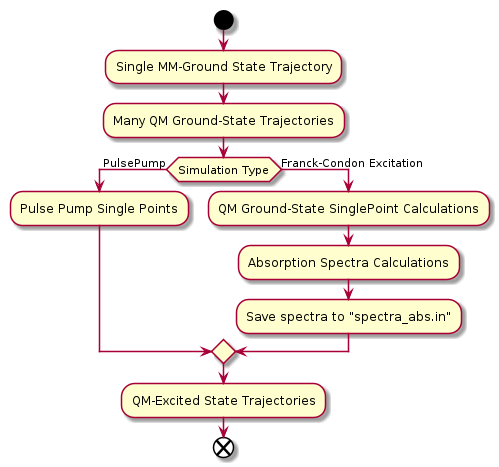

Pynasqm
Table of Contents
1 Installation
2 Usage
Pynasqm is currently capable of automating the following actions
- Single MM-Ground State Trajectory
- QM-Ground State Trajectories originating from MM-Ground-State
- Absorption calculations using snapshots from the QM-Ground State Trajectories
- PulsePump SinglePoint Calculations
- QM-Excited State Trajectory
- Franck-Condon Excitations
- Pule Pump Simulations
- Capable of performing Non-Adiabatic using the isTully option

Follow instructions for Creating a QM/MM System for SANDER-NEXMD to create an AMBER parameter/topology (prmtop) file and an AMBER coordinate (inpcrd) file. Create a new directory with any name you'd like. Copy your prmtop and inpcrd file to that directory, renaming the files to
- m1.prmtop (prmtop file)
- m1md2.rst (restart file)
You can initialize the other input files with
nasqm.py --init
which will generate
- pynasqm.in (pynasqm input file)
- input.ceon (The NEXMD input file)
- mdqmmmamb.in (The AMBER input file)
For the documentation for NEXMD, please refer to NEXMD-Git (Contact either Adrian Roitberg (roitberg@ufl.edu) or Sergei Tretiak (serg@lanl.gov) for permission). For the AMBER input file, refer to AMBER-Manual.
The pynasqm input file is written as a commented J-SON file. On lines other than the ones commented out, the file is white space sensitive. Any edits should be performed within the second quoted value on the line. Refer to the comments within the file for guidance on the inputs. Any further question can be referred to Dustin Tracy (dtracy@ufl.edu). systems employing the slurm array feature.
Once your input files are setup, run the program by executing the following in your working directory containing the input files.
nasqm.py
3 SANDER-NEXMD
3.1 Installation
Installation of the SANDER-NEXMD installation will require the following as well as their dependencies:
- NEXMD (Git Access)
- Amber (Git Access)
We also strongly encourage the use of the intel/2017 compiler w/ mkl. GNU is supported but users will have better performance with the intel compiler.
First install NEXMD. Access to the NEXMD git is restricted. Please contact either Adrian Roitberg (roitberg@ufl.edu) or Sergei Tretiak (serg@lanl.gov) for permission.
CD to your application director, then pull the NEXMD git using.
git clone https://github.com/roitberg/nexmd.git
And check-in to the amber-nexmd-na branch.
cd nexmd git checkout amber-nexmd-na
Try to install the standalone NEXMD program. Activate your chosen compiler, then use either:
make ic_mkl # For intel w/ mkl make gnu_mkl # For gnu w/ mkl make gnu # For gnu wo/ mkl (not recommended)
If this fails, refer to the documentation included in the NEXMD git. Please contact either Dustin Tracy (dtracy@ufl.edu) or Benjamin Nebgen (bnebgen@lanl.gov) for further questions regarding compilation of NEXMD. Once we’ve successfully installed NEXMD, we need to flush the standalone temp files so AMBER can build the Library files.
make clean
Now we need to set a variable so AMBER knows where to find NEXMD.
export NAESMDHOME=`pwd`
Note that currently NAESMDHOME is used here, not NEXMDHOME. The new name will be updated soon. We are now done with prepping NEXMD.
We now need to install AMBERTOOLS. We are currently using a restricted git for development. Please contact Dustin Tracy (dtracy@ufl.edu) for access to a tar file.
CD into your application directory and extract the tar file.
tar -xvf amber_na.tar.gz
Try to build the standalone AMBER program.
cd amber export AMBERHOME=`pwd` ./configure –noX11 --skip-python -norism intel mkl # for intel w/ mkl ./configure –noX11 --skip-python -norism gnu mkl # for gnu w/ mkl ./configure –noX11 --skip-python -norism gnu # for gnu
Use the same configuration you used for your NEXMD build.
Then install
source ./amber.sh make install
If this fails please refer to the amber manual (https://ambermd.org/Manuals.php) for troubleshooting and contact information. Once successful installation and testing of the standalone AmberTools packages is completed cd back into AMBERHOME and configure AMBER to link to the NEXMD package.
cd $AMBERHOME ./configure –noX11 --skip-python -norism -naesmd intel mkl # for intel w/ mkl ./configure –noX11 --skip-python -norism -naesmd gnu mkl # for gnu w/ mkl ./configure –noX11 --skip-python -norism -naesmd gnu # for gnu
We don’t need to rebuild all AMBER now, only SANDER, so we CD into SANDER and build from there.
cd AmberTools/src/sander make install
To test successful installation (python3 required)
cd $NAESMDHOME/testscripts/amber_nexmd_testscripts python run_tests.py
3.2 SANDER-NEXMD Single Trajectory Run
Though our implementation of the simulation of non-adiabatic dynamics requires a large number of independent trajectories, the SANDER-NEXMD interface can only manage a single trajectory. Another script (to be introduced later) controls the characteristics of the swarm. Each single SANDER-NEXMD trajectory will require a number of inputs.
- Amber Input (mdin)
- NEXMD Input (input.ceon)
- Amber Coordinate File (mdcrd)
- Amber Parameter File (prmtop)
Full examples can be found in $NAESMDHOME/tests/ambernexmd/. Refer to the the included README in that directory to determine the type of trajectory for each test.
Amber Input
300K constant temp QMMMMD &cntrl ** Normal Amber Input (Check manual) ** ifqnt=1 / &qmmm verbosity=5, qmmask=':1', nae=1 /
No special behavior is needed from cntrl besides the activation of qm/mm (setting ifqnt=1). Most QM/MM behavior is controlled by the input.ceon file for the exception of the verbosity, the atoms the include in the qm calculations (qmmask) and the referral to nexmd (nae). Please refer the AMBER manual for information regarding the parameters found in &cntrl.
NEXMD Input
&qmmm maxcyc=0, ! Optimization must be turned off ** Normal NEXMD Input ** ** Include all of AMBER’s qm/mm flags besides verbosity, qmmask ** &endqmmm &moldyn ** Normal NEXMD Input ** &endmoldyn &coord ** Block must be included but is ignored ** &endcoord &veloc ** Block must be included but is ignored ** &endveloc &coeff ** Normal NEXMD Input ** &endcoeff
The NEXMD-SANDER interface is designed to be able to read an unmodified nexmd file. For most users, little to no modification will be required beyond setting the qmewald parameters. Note that the initial coordinates and velocities are read from the amber intput files and any values included in the input.ceon file will be ignored.
3.3 AMBER Coordinate File
Amber coordinate files are needed to run the SANDER-NEXMD interface. These can be created using tleap, or through a converter built into PyNASQM. To use the pynasqm converter
amber-nexmd-converter.py input.ceon mdcrd
Further instruction for prepping a job can be found in the Creating a System section.
3.4 AMBER prmtop
AMBER prmtop files can be generated using tleap. Refer to the AMBER manual for this procedure or look at the Create a QM/MM System for SANDER-NEXMD.
3.5 Creating a QM/MM System for SANDER-NEXMD METHOD
- Build your solute using either Avogadro or Gaussview
- Create pepi files for each using antechamber that came with AMBER for each of
the following commands
$molecule=molecule name - Generate your mol and frcmod files. There are two methods.
If you have fully parameterized pdb file or don't need accurate charges. (Most likely your main solute)
# Generates a prepfile antechamber -fi pdb -fo prepi -i $molecule.pdb -o o2.prepi # Generate frcmod file parmchk2 -f prepi -i $molecule.prepi -o $molecule.frcmod # Generate mol2 file antechamber -fi pdb -fo mol2 -i $molecule.pdb -o $molecule.mol2 -rn $molecule -c bcc -pf y
If you need accurate charges (Most likely a self generated solvent)
# Create a gaussian file to calculate resp charges antechamber -i $molecule.pdb \ -fi pdb \ -o ${molecule}_char.com \ -fo gcrt \ -gv 1 \ -ge $molecule.gesp # Run the gaussian file g09 ${molecule}_char.com > ${molecule}_char.log # Use the generated esp file to create mol2 antechamber -i $molecule.esp \ -fi gesp \ -o $molecule.mol2 \ -fo mol2 \ -c resp \ -eq 0 \ -a gaff \ -rn $molecule # Use mol2 file to generate frcmod parmchk -i $molecule.mol2 -f mol2 -o m1.frcmod
run tleap with
cat << EOF > leap.in source leaprc.gaff source leaprc.water.tip3p loadamberparams $solute.frcmod loadamberparams $solution.frcmod $solute=loadmol2 $solute.mol2 $solution=loadmol2 $solution.mol2 solvatebox $solute $solution 30 saveamberparm $solute $solute.prmtop $solute.inpcrd quit EOF tleap -f leap.in
Note that the line
solvatebox $solute $solution 30is the size of the box, you can change this to anything but the system will crash if the box isn't twice the length of the QM box.You should now have the following 2 files. A parameter files
$solute.prmtopand$solute.inpcrd. We now want to equilibrate this system. Create the following filesm1_min1.in
initial minimization solvent + ions &cntrl imin = 1, maxcyc = 1000, ncyc = 500, ntb = 1, ntr = 1, cut = 10.0 / Hold Solute fixed 500.0 ATM 1 <number of solute atoms> END END
Note : The line
ATM 1 <number of solute atoms>should be from 1 to Number of atoms in solute.m1_min2.in
initial minimization solvent + ions &cntrl imin = 1, maxcyc = 2500, ncyc = 1000, ntb = 1, ntr = 0, cut = 10.0 /
m1_md1.in
MD Equilibration STEP &cntrl imin = 0, irest = 0, ntx = 1, ig =-1, ntb = 1, cut = 10.0, ntr = 1, ntc = 2, ntf = 2, tempi = 0.0, temp0 = 300.0, ntt = 3, gamma_ln = 2.0, nstlim = 5000, dt = 0.002, ntpr = 100, ntwx = 100, ntwr = 1000 / Keep fixed with weak restraints 10.0 ATM 1 <number of solute atoms> END END
Note : The line
ATM 1 <number of solute atoms>should be from 1 to Number of atoms in solute.m_md2.in
Constant Pressure Relaxation &cntrl imin = 0, irest = 1, ntx = 5, ntb = 2, pres0 = 1.0, ntp = 1, ig = -1, taup = 2.0, cut = 10.0, ntr = 0, ntc = 2, ntf = 2, tempi = 300.0, temp0 = 300.0, ntt = 3, gamma_ln = 2.0, nstlim = 100000, dt = 0.002, ntpr = 100, ntwx = 100, ntwv = -1, ntwr = 1000 /
Now we want to create our equilibrated system create a file
box_eq.sh
echo 'm1_min' sander -O -i m1_min.in -o m1_min.out -r m1_min.rst -c m1.inpcrd -p m1.prmtop -ref m1.inpcrd echo 'm1_min1' sander -O -i m1_min2.in -o m1_min2.out -r m1_min2.rst -c m1_min.rst -p m1.prmtop echo 'm1_md1' sander -O -i m1_md1.in -o m1_md1.out -r m1_md1.rst -c m1_min2.rst -p m1.prmtop -ref m1_min2.rst echo 'm1_md2' sander -O -i m1_md2.in -o m1_md2.out -r m1_md2.rst -c m1_md1.rst -p m1.prmtop echo 'finished'
Run this with
./box_eq.sh
This will leave you with an equilibrated geometry file
m1_md2.rst.We now only need the NEXMD input and SANDER input file to begin.
md_qmmm_amb.in
300K constant temp QMMMMD &cntrl imin=0, iwrap=1, irest=0, ntx=5, ntb=1, ntp=0, ig=-1, taup=2.0, cut=16.0, ntr=0, tempi=300.0, temp0=300.0, ntt=3, ! Use Langevin gamma_ln=2.0, ! Lavenvin constant nstlim=20000, ! Number of Step dt=0.0005, ntpr=10, ! print every 10 steps ntwx=10, ! print coords every 10 steps ntwv=-1, ! save velocities every time coords are saved ifqnt=1 ! Do QM calculations / &qmmm verbosity=1, qmmask=':1', ! Only use QM on the solute nae=1 ! Activate NEXMD Looks for input.ceon file /
input.ceon
&qmmm qm_theory='AM1', diag_routine=1, qmcharge=0, qmshake=0, qm_ewald=0, qm_pme=0, scfconv=1.0000E-10, printcharges=1, printdipole=0, printbondorders=0, density_predict=0, itrmax=300, diag_routine=1, exst_method=2, dav_guess=0, ftol0=1.0000E-05, ! Acceptance Tolerance for Davidson (emin-eold) ftol1=1.0000E-06, ! Acceptance Tolerance for Davidson (residual) dav_maxcyc=200, calcxdens=.false., maxcyc=0, ntpr=1, grms_tol=1.0000E-02, solvent_model=0, potential_type=1, ceps=10, linmixparam=1, cosmo_scf_ftol=1.0000E-05, EF=0, Ex=0.0000E+00, Ez=0.0000E+00, Ey=0.0000E+00, !1.000E-02 onsager_radius=2, &endqmmm &moldyn !***** General parameters rnd_seed=1, ! seed for the random number generator bo_dynamics_flag=1, ! 0-non-BO, 1-BO [1] exc_state_init=0, ! initial excited state (0 - ground state) [0] n_exc_states_propagate=0, ! number of excited states [0] !***** Dynamics parameters time_init=0.d0, ! initial time, fs [0.0] time_step=0.5, !time step, fs [0.1] n_class_steps=0, !number of classical steps [1] n_quant_steps=0, ! number of quantum steps for each classical step [4] moldyn_deriv_flag=1, ! 0-none, 1-analyt, 2-numeric [1] num_deriv_step=1.d-5, ! displacement for numerical derivatives, A [1.d-3] rk_tolerance=1.d-7, ! tolerance for the Runge-Kutta propagator [1.d-7] !***** Non-adiabatic parameters quant_step_reduction_factor=2.5d-2, ! quantum step reduction factor [0.1] decoher_type=2, ! type of decoherence: Persico/Granucci (0), Truhlar(1) [0] decoher_e0=0.d0, ! decoherence parameter E0 [0.1] decoher_c=0.d0, ! decoherence parameter C [0.1] dotrivial=1 !***** Thermostat parameters therm_type=1, ! Thermostat type (0-no thermostat,1-Langevin,2-Berendsen) [0] therm_temperature=300.d0, ! Thermostate temperature, K [300.0] therm_friction=2.d0, ! thermostate friction coefficient, 1/ps [2.0] berendsen_relax_const=0.4d0, ! bath relaxation constant, only for Berendsen [0.4] heating=0, ! heating (1) or equilibrated(0) [0] heating_steps_per_degree=100, ! number of steps per degree during heating [100] !***** Output & Log parameters verbosity=3, ! output verbosity (0-minimal, 3-highest) [2] out_data_steps=100, ! number of steps to write data [1] out_coords_steps=100, ! number of steps to write the restart file [10] out_data_cube=0, ! write(1) or not(0) view files to generate cubes [0] out_count_init=0, ! the initial count for output files [0] &endmoldyn &coord &endcoord &veloc &endveloc &coeff 0.0000000000000000 0.0000000000000000 0.0000000000000000 0.0000000000000000 &endcoeffNote that the coord and veloc must be there, but there values will be overridden by amber during dynamics.
Run the md with the command
sander -O -i md_qmmm_amb.in -o mdout -p m1.prmtop -c m1_md2.rst -x traj_file.nc
4 Pytraj
Pytraj is a python program the wraps around cpptraj, a molecular dynamics analyzer and editor.
I've had a lot of issues using conda or pip to install pytraj. I found it best to build from source. Make sure that you've activated your python environment, then
git clone https://github.com/Amber-MD/pytraj cd pytraj python ./setup.py install